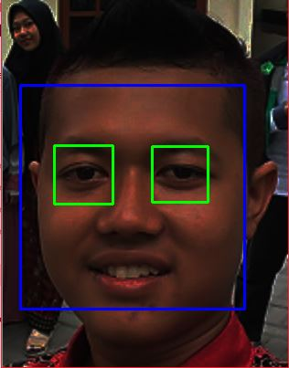
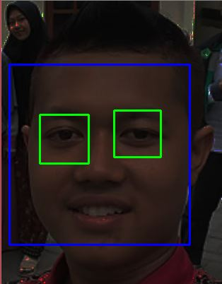

Object Detection with different brightness
images normal
images brightness -150%
images brightness -200%
images brightness -250%
 images normal
images normal
 images brightness -250%
images brightness -250%